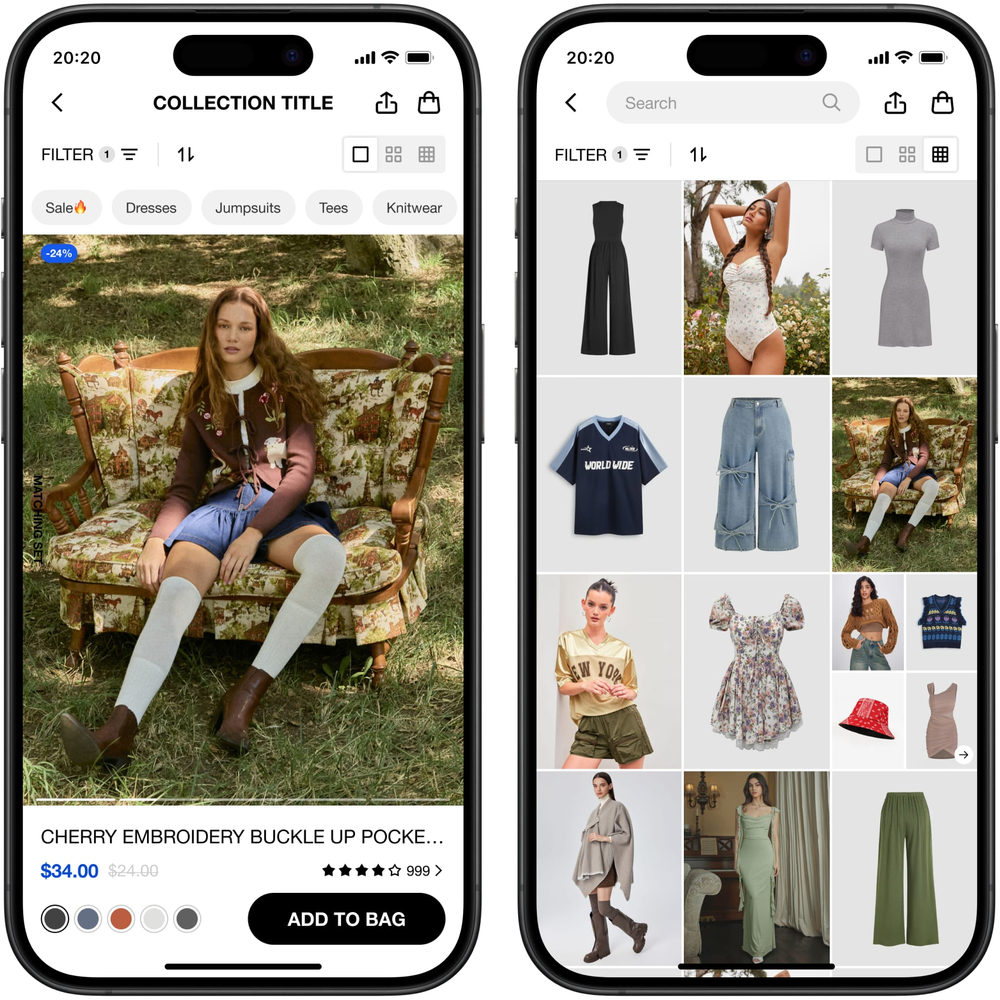

Loading...
Loading...
Role: UX & Product Design Lead
Cider (founded in 2020) is a fast‑fashion e‑commerce platform targeting Gen Z shoppers worldwide. Backed by top-tier investors like a16z, IDG Capital, and DST, Cider reached unicorn status within 18 months and rapidly grew into a global brand known for affordable, on-trend clothing shipped to over 100 countries.
Designing a fashion e-commerce app for Gen Z users is never just about logical information hierarchy — it’s about creating an emotional, inspiring experience that resonates with style-conscious, beauty-loving young consumers.
After the brand refresh, we took the opportunity to completely rethink and upgrade Cider’s UI & UX system. This wasn’t only to present a new app experience to users, but also to revisit many fast, early-stage design decisions and comprehensively update the codebase.
Unlike a traditional “supermarket-style” e-commerce site, the Cider app aims to feel more like a fashion magazine. We intentionally limit pushy promotional content and introduce three view modes on the product collection page: a default two-column layout, a three-column grid reminiscent of an Instagram feed, and a single-column immersive view that feels like endlessly flipping through a fashion magazine — or even scrolling on TikTok.
To help users find complete looks rather than individual items, we prominently feature styling recommendations on product detail, shopping bag, and checkout pages. The shopping flow is designed to be smooth and minimally disruptive, with guided steps that lead users seamlessly from their bag into checkout.
The UI also subtly shifts at checkout. Before checkout, emotional images, engaging copy, and playful live-stream content help capture attention. After checkout, we focus on clear, decision-supporting information — for example, fully redesigned refund and return flows tailored to local policies, which have significantly reduced complaint rates and eased pressure on support teams.
AI-Powered Visual Production
Since 2023, breakthroughs in AI image generation have unlocked new possibilities. We began experimenting early with tools like Midjourney and introduced them to our design teams to boost creative pattern design.
As technologies like Stable Diffusion and Flux matured, we started applying them to digital shooting workflows — such as creating virtual scenes for still-life photography, merging products with portraits, training LoRA models on real scenes to replicate backgrounds, and using inpainting to preview new designs on models before physical samples existed.
We also experimented with AI-generated virtual models and facial replacement using ComfyUI, achieving batch outputs in internal tests. While not yet commercialized, these experiments show huge potential to reshape traditional fashion photography workflows.
Proactively exploring new AI technology allows us to push beyond conventional brand and user experience design boundaries. Virtual try-on experiments, background replacement to cut costs, and pattern swaps to help designers visualize final looks early — all represent future-forward steps that would have been unimaginable just a few years ago.
This project solidified Cider’s reputation not just as a fashion brand, but as a platform driving innovation in UX and digital content for next-gen consumers.